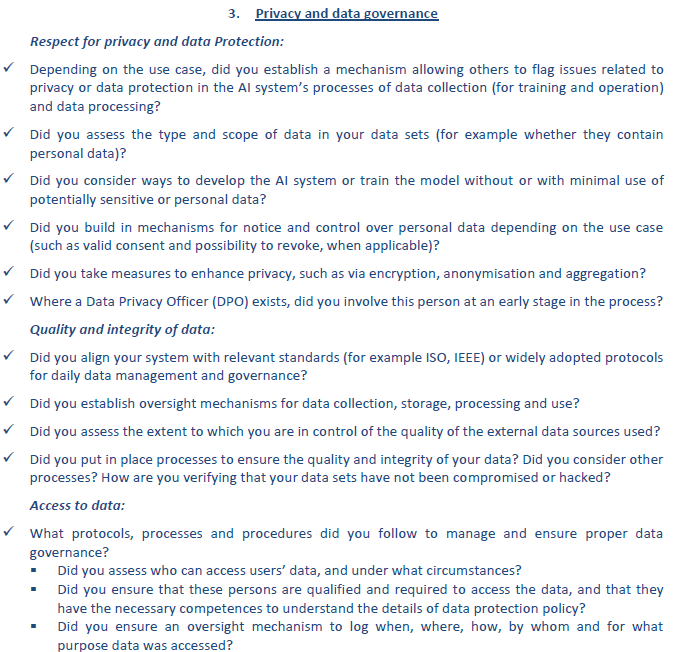

Privacy and data governance¶
Trustworthy AI must ensure that privacy, as a fundamental right, is respected for all parties – users, individuals targeted or employees. Quality and integrity of the data must also be protected, and access to data must be regulated.
Respect for privacy and data Protection¶
Any system gathering data must ensure that the consent of the user is respected, and his privacy protected.
Concretely it means :
Data must be collected via lawful and secure process
Minimization principle: data collected should be limited to the smallest scope possible regarding personal or sensitive data. When personal or sensitive sources are added in a model, the benefits/risks ratio must be evaluated, in collaboration with DPO. Data collected should not only be correlated but have a clear causality link with the expected output
People should be aware when their personal data is collected, and whenever possible should be able to give valid consent and revoke collection
Any kind of personal scoring can endanger the principle of non-discrimination, and should be avoided unless it has a clear justification, and the usage is proportionate and fair
Personal information should never be available at any point of the AI lifecycle. In particular prediction of gender, health, sexual orientation or any other personal information should be banned, even as a temporary step
Data collection and data transformation must be fully documented and validated by appropriate instances (DPO)
Data should be as much as possible encrypted, anonymized or aggregated (see definition section). You can find online some hashing python libraries. Raw personal data should never be used directly in a model
An internal process must be put in place to raise issues related to privacy or data protection. A referent person should be named
Quality and integrity of data¶
To avoid any harmful consequence of an AI system, the quality and integrity of the data must be ensured at any time
Relevant standards and protocols for data management must be put in place
Data owners, responsible for the data governance in their functional scope, must be appointed
The data quality must be controlled – including from external data sources. Wrong personal data could cause harms to the person targeted. For instance, duplicates or wrong format should be avoided. Great expectations library can help you implement these quality checks.
Protection against hacking and verification that the data is not compromised must be implemented. Data must be stored in a protected location
Access to data¶
As a general principle, only people with valid reasons should access each dataset
AI contributors must make sure they get security clearances from their legal departments before starting to collect the data
Each dataset containing private or sensitive data should be protected individually, with access rights given on case by case
Each person asking for personal or sensitive data should have the agreement of DPO (if existing), or justify the need. They must follow data protection policy in place
If possible, an oversight mechanism should be put in place to log when, where, how and by whom each data was accessed
Definitions¶
Encryption: the process of converting information or data into a code, especially to prevent unauthorized access
Anonymization: it is the process of protecting private or sensitive information by erasing or encrypting identifiers that connect an individual to stored data
Aggregation: it is the process of aggregating several data entries together before ingesting in a system, to avoid using and accessing specific personal data
Appendix - Recommendations from the EU¶
Below are the recommendations directly reported from EU.
{kind=link}